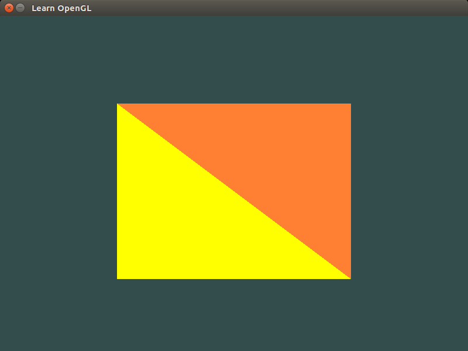
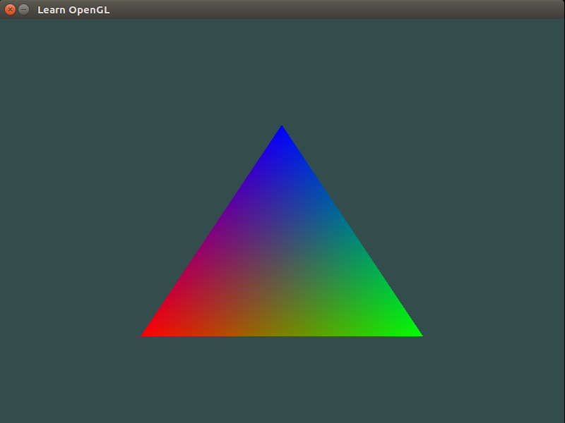

2. Lecture #2¶
We continue our discussion about OpenGL, and learn about vertex and fragment shaders. The following code shows how to draw two triangles with different colors.
#include <GL/glew.h>
#include <GLFW/glfw3.h>
#include <iostream>
void key_callback(GLFWwindow* window,int key,int scancode,int action,int mode)
{
if(key==GLFW_KEY_ESCAPE && action==GLFW_PRESS)
glfwSetWindowShouldClose(window,GL_TRUE);
}
// vertex shader
const GLchar* vertex_shader_source="# version 330 core\n"
"layout (location=0) in vec3 position;\n"
"void main()\n"
"{\n"
"gl_Position = vec4(position.x,position.y,position.z,1.0);\n"
"}\0";
// fragment shaders
const GLchar* fragment_shader_source1="# version 330 core\n"
"out vec4 color;\n"
"void main()\n"
"{\n"
"color=vec4(1.0f,0.5f,0.2f,1.0f);\n"
"}\0";
const GLchar* fragment_shader_source2="# version 330 core\n"
"out vec4 color;\n"
"void main()\n"
"{\n"
"color=vec4(1.0f,1.0f,0.0f,1.0f);\n"
"}\0";
int main()
{
glfwInit();
#if __APPLE__
glfwWindowHint(GLFW_OPENGL_FORWARD_COMPAT,GL_TRUE);
#endif
glfwWindowHint(GLFW_CONTEXT_VERSION_MAJOR,3);
glfwWindowHint(GLFW_CONTEXT_VERSION_MINOR,3);
glfwWindowHint(GLFW_OPENGL_PROFILE,GLFW_OPENGL_CORE_PROFILE);
glfwWindowHint(GLFW_RESIZABLE,GL_FALSE);
GLFWwindow *window=glfwCreateWindow(800,600,"Learn OpenGL",nullptr,nullptr);
if(window==nullptr)
{
std::cout<<"Failed to create GLFW window!"<<std::endl;
glfwTerminate();
return -1;
}
glfwMakeContextCurrent(window);
glewExperimental=GL_TRUE;
if(glewInit()!=GLEW_OK)
{
std::cout<<"Failed to initialize GLEW!"<<std::endl;
return -1;
}
int width,height;
glfwGetFramebufferSize(window,&width,&height);
glViewport(0,0,width,height);
glfwSetKeyCallback(window,key_callback);
GLfloat vertices[]={
0.5f, 0.5f, 0.0f,
0.5f, -0.5f, 0.0f,
-0.5f, -0.5f, 0.0f,
-0.5f, 0.5f, 0.0f
};
GLuint indices1[]={
0, 1, 3
};
GLuint indices2[]={
1, 2, 3
};
// create vertex buffer object
GLuint VBO;
glGenBuffers(1,&VBO);
// create element buffer objects
GLuint EBO[2];
glGenBuffers(2,EBO);
// vertex shader
GLuint vertex_shader=glCreateShader(GL_VERTEX_SHADER);
glShaderSource(vertex_shader,1,&vertex_shader_source,NULL);
glCompileShader(vertex_shader);
GLint success;
GLchar info_log[512];
glGetShaderiv(vertex_shader,GL_COMPILE_STATUS,&success);
if(!success)
{
glGetShaderInfoLog(vertex_shader,512,NULL,info_log);
std::cout<<"Error! Vertex Shader::Compilation Failed!"<<std::endl<<info_log<<std::endl;
}
// fragment shaders
GLuint fragment_shader1=glCreateShader(GL_FRAGMENT_SHADER);
glShaderSource(fragment_shader1,1,&fragment_shader_source1,NULL);
glCompileShader(fragment_shader1);
glGetShaderiv(fragment_shader1,GL_COMPILE_STATUS,&success);
if(!success)
{
glGetShaderInfoLog(fragment_shader1,512,NULL,info_log);
std::cout<<"Error! Fragment Shader::Compilation Failed!"<<std::endl<<info_log<<std::endl;
}
GLuint fragment_shader2=glCreateShader(GL_FRAGMENT_SHADER);
glShaderSource(fragment_shader2,1,&fragment_shader_source2,NULL);
glCompileShader(fragment_shader2);
glGetShaderiv(fragment_shader2,GL_COMPILE_STATUS,&success);
if(!success)
{
glGetShaderInfoLog(fragment_shader2,512,NULL,info_log);
std::cout<<"Error! Fragment Shader::Compilation Failed!"<<std::endl<<info_log<<std::endl;
}
// shader programs
GLuint shader_program1=glCreateProgram();
glAttachShader(shader_program1,vertex_shader);
glAttachShader(shader_program1,fragment_shader1);
glLinkProgram(shader_program1);
glGetProgramiv(shader_program1,GL_LINK_STATUS,&success);
if(!success)
{
glGetProgramInfoLog(shader_program1,512,NULL,info_log);
std::cout<<"Error! Shader Program::Linking Failed!"<<std::endl<<info_log<<std::endl;
}
GLuint shader_program2=glCreateProgram();
glAttachShader(shader_program2,vertex_shader);
glAttachShader(shader_program2,fragment_shader2);
glLinkProgram(shader_program2);
glGetProgramiv(shader_program2,GL_LINK_STATUS,&success);
if(!success)
{
glGetProgramInfoLog(shader_program2,512,NULL,info_log);
std::cout<<"Error! Shader Program::Linking Failed!"<<std::endl<<info_log<<std::endl;
}
glDeleteShader(vertex_shader);
glDeleteShader(fragment_shader1);
glDeleteShader(fragment_shader2);
// create vertex array objects
GLuint VAO[2];
glGenVertexArrays(2,VAO);
// bind vertex array object
glBindVertexArray(VAO[0]);
// copy the vertices in a vertex buffer
glBindBuffer(GL_ARRAY_BUFFER,VBO);
glBufferData(GL_ARRAY_BUFFER,sizeof(vertices),vertices,GL_STATIC_DRAW);
// copy the index array in an element buffer
glBindBuffer(GL_ELEMENT_ARRAY_BUFFER,EBO[0]);
glBufferData(GL_ELEMENT_ARRAY_BUFFER,sizeof(indices1),indices1,GL_STATIC_DRAW);
// set vertex attribute pointers
glVertexAttribPointer(0,3,GL_FLOAT,GL_FALSE,3*sizeof(GL_FLOAT),(GLvoid*)0);
glEnableVertexAttribArray(0);
// unbind the vertex array object
glBindVertexArray(0);
// bind vertex array object
glBindVertexArray(VAO[1]);
// copy the vertices in a vertex buffer
glBindBuffer(GL_ARRAY_BUFFER,VBO);
glBufferData(GL_ARRAY_BUFFER,sizeof(vertices),vertices,GL_STATIC_DRAW);
// copy the index array in an element buffer
glBindBuffer(GL_ELEMENT_ARRAY_BUFFER,EBO[1]);
glBufferData(GL_ELEMENT_ARRAY_BUFFER,sizeof(indices2),indices2,GL_STATIC_DRAW);
// set vertex attribute pointers
glVertexAttribPointer(0,3,GL_FLOAT,GL_FALSE,3*sizeof(GL_FLOAT),(GLvoid*)0);
glEnableVertexAttribArray(0);
// unbind the vertex array object
glBindVertexArray(0);
//glPolygonMode(GL_FRONT_AND_BACK,GL_LINE);
while(!glfwWindowShouldClose(window))
{
glfwPollEvents();
glClearColor(.2f,.3f,.3f,1.f);
glClear(GL_COLOR_BUFFER_BIT);
// use shader programs
glUseProgram(shader_program1);
glBindVertexArray(VAO[0]);
glDrawElements(GL_TRIANGLES,3,GL_UNSIGNED_INT,0);
glBindVertexArray(0);
glUseProgram(shader_program2);
glBindVertexArray(VAO[1]);
glDrawElements(GL_TRIANGLES,3,GL_UNSIGNED_INT,0);
glBindVertexArray(0);
glfwSwapBuffers(window);
}
// deallocate all resources
glDeleteVertexArrays(2,VAO);
glDeleteBuffers(1,&VBO);
glDeleteBuffers(2,EBO);
// terminate GLFW
glfwTerminate();
return 0;
}
Save this file as main.cpp. To compile the code, run the following command:
g++ -O3 main.cpp -o triangle -lGLEW -lglfw -lGL -lX11 -lpthread -lXrandr -ldl -lXxf86vm -lXinerama -lXcursor -lrt -lm -std=c++11
This will create a binary triangle, and now if you execute the following command:
./triangle
then you should see a new window (like the one shown below) pop-up on your screen:
{kind=link}
Execute the following command to run this code on Mac OS:
g++ -O3 main.cpp -o triangle -lGLEW -lglfw -framework OpenGL -ldl -lm -std=c++11
As you can see, writing OpenGL code can quickly become quite cumbersome as many
initializations and checks need to be executed to make sure that everything was
setup correctly. However, this is where we can exploit the power of C++, in
particular, its Object-Oriented Principle to reduce code complexity. In the
following example, we will create a new class Shader that will abstract away
from the user all the intricacies involved in creating a new shader program,
making it much easier and user-friendly.
#ifndef SHADER_H
#define SHADER_H
#include <string>
#include <fstream>
#include <sstream>
#include <iostream>
#include <GL/glew.h>
class Shader
{
public:
// the shader program id
GLuint program;
Shader(const GLchar* vertex_path,const GLchar* fragment_path)
{
// retrieve the vertex/fragment source code
std::string vertex_code,fragment_code;
std::ifstream vertex_shader_file,fragment_shader_file;
// ensures ifstream objects can throw exceptions
vertex_shader_file.exceptions(std::ifstream::badbit);
fragment_shader_file.exceptions(std::ifstream::badbit);
try{
// open files
vertex_shader_file.open(vertex_path);
fragment_shader_file.open(fragment_path);
std::stringstream vertex_shader_stream,fragment_shader_stream;
// read file's buffer contents into streams
vertex_shader_stream<<vertex_shader_file.rdbuf();
fragment_shader_stream<<fragment_shader_file.rdbuf();
// close file handlers
vertex_shader_file.close();
fragment_shader_file.close();
// convert stream into string
vertex_code=vertex_shader_stream.str();
fragment_code=fragment_shader_stream.str();
}
catch(std::ifstream::failure e){
std::cout<<"Error::Shader::File Not Successfully Read!"<<std::endl;
}
const GLchar* vertex_shader_code=vertex_code.c_str();
const GLchar* fragment_shader_code=fragment_code.c_str();
// compile shaders
GLuint vertex,fragment;
GLint success;
GLchar info_log[512];
// vertex shader
vertex=glCreateShader(GL_VERTEX_SHADER);
glShaderSource(vertex,1,&vertex_shader_code,NULL);
glCompileShader(vertex);
// print compile errors if any
glGetShaderiv(vertex,GL_COMPILE_STATUS,&success);
if(!success)
{
glGetShaderInfoLog(vertex,512,NULL,info_log);
std::cout<<"Error::Shader::Vertex::Compilation Failed!"<<std::endl<<info_log<<std::endl;
}
// fragment shader
fragment=glCreateShader(GL_FRAGMENT_SHADER);
glShaderSource(fragment,1,&fragment_shader_code,NULL);
glCompileShader(fragment);
// print compile errors if any
glGetShaderiv(fragment,GL_COMPILE_STATUS,&success);
if(!success)
{
glGetShaderInfoLog(fragment,512,NULL,info_log);
std::cout<<"Error::Shader::Fragment::Compilation Failed!"<<std::endl<<info_log<<std::endl;
}
// shader program
this->program=glCreateProgram();
glAttachShader(this->program,vertex);
glAttachShader(this->program,fragment);
glLinkProgram(this->program);
// print linking errors if any
glGetProgramiv(this->program,GL_LINK_STATUS,&success);
if(!success)
{
glGetProgramInfoLog(this->program,512,NULL,info_log);
std::cout<<"Error::Shader::Program::Linking Failed!"<<std::endl<<info_log<<std::endl;
}
// delete the shaders as they are now linked into our program and no longer necessary
glDeleteShader(vertex);
glDeleteShader(fragment);
}
void Use()
{glUseProgram(this->program);}
};
#endif
Save the above code in a file called Shader.h. Now open up a new file and
type in the following code below:
#include <GL/glew.h>
#include <GLFW/glfw3.h>
#include <cmath>
#include "Shader.h"
void key_callback(GLFWwindow* window,int key,int scancode,int action,int mode)
{
if(key==GLFW_KEY_ESCAPE && action==GLFW_PRESS)
glfwSetWindowShouldClose(window,GL_TRUE);
}
int main()
{
glfwInit();
#if __APPLE__
glfwWindowHint(GLFW_OPENGL_FORWARD_COMPAT,GL_TRUE);
#endif
glfwWindowHint(GLFW_CONTEXT_VERSION_MAJOR,3);
glfwWindowHint(GLFW_CONTEXT_VERSION_MINOR,3);
glfwWindowHint(GLFW_OPENGL_PROFILE,GLFW_OPENGL_CORE_PROFILE);
glfwWindowHint(GLFW_RESIZABLE,GL_FALSE);
GLFWwindow *window=glfwCreateWindow(800,600,"Learn OpenGL",nullptr,nullptr);
if(window==nullptr)
{
std::cout<<"Failed to create GLFW window!"<<std::endl;
glfwTerminate();
return -1;
}
glfwMakeContextCurrent(window);
glewExperimental=GL_TRUE;
if(glewInit()!=GLEW_OK)
{
std::cout<<"Failed to initialize GLEW!"<<std::endl;
return -1;
}
int width,height;
glfwGetFramebufferSize(window,&width,&height);
glViewport(0,0,width,height);
glfwSetKeyCallback(window,key_callback);
Shader our_shader("shader.vs","shader.frag");
GLfloat vertices[]={
// positions // colors
-0.5f, -0.5f, 0.0f, 1.0f, 0.0f, 0.0f,
0.5f, -0.5f, 0.0f, 0.0f, 1.0f, 0.0f,
0.0f, 0.5f, 0.0f, 0.0f, 0.0f, 1.0f
};
GLuint VAO,VBO;
glGenBuffers(1,&VBO);
glGenVertexArrays(1,&VAO);
// bind vertex array object
glBindVertexArray(VAO);
// copy the vertices in a buffer
glBindBuffer(GL_ARRAY_BUFFER,VBO);
glBufferData(GL_ARRAY_BUFFER,sizeof(vertices),vertices,GL_STATIC_DRAW);
// set position attribute pointers
glVertexAttribPointer(0,3,GL_FLOAT,GL_FALSE,6*sizeof(GL_FLOAT),(GLvoid*)0);
glEnableVertexAttribArray(0);
// set color attribute pointers
glVertexAttribPointer(1,3,GL_FLOAT,GL_FALSE,6*sizeof(GL_FLOAT),(GLvoid*)(3*sizeof(GLfloat)));
glEnableVertexAttribArray(1);
// unbind the vertex array object
glBindVertexArray(0);
while(!glfwWindowShouldClose(window))
{
glfwPollEvents();
glClearColor(.2f,.3f,.3f,1.f);
glClear(GL_COLOR_BUFFER_BIT);
// use shader program
our_shader.Use();
// draw
glBindVertexArray(VAO);
glDrawArrays(GL_TRIANGLES,0,3);
glBindVertexArray(0);
glfwSwapBuffers(window);
}
// deallocate all resources
glDeleteVertexArrays(1,&VAO);
glDeleteBuffers(1,&VBO);
// terminate GLFW
glfwTerminate();
return 0;
}
Save this file as main.cpp. You will need to create two additional files for
the vertex and fragment shaders. Open a new file and type the following code:
#version 330 core
layout (location=0) in vec3 position;
layout (location=1) in vec3 color;
out vec3 our_color;
void main()
{
gl_Position=vec4(position,1.0f);
our_color=color;
}
Save this file as shader.vs. Open another file and type the following
command:
#version 330 core
in vec3 our_color;
out vec4 color;
void main()
{
color=vec4(our_color,1.0f);
}
Save this file as shader.frag. If you did everything right, then you should
see four new files in your folder now: Shader.h, main.cpp,
shader.vs, and shader.frag. To compile the code, run the following
command:
g++ -O3 main.cpp -o triangle -lGLEW -lglfw -lGL -lX11 -lpthread -lXrandr -ldl -lXxf86vm -lXinerama -lXcursor -lrt -lm -std=c++11
This will create a binary triangle, and now if you execute the following command:
./triangle
then you should see a new window (like the one shown below) pop-up on your screen:
{kind=link}
Execute the following command to run this code on Mac OS:
g++ -O3 main.cpp -o triangle -lGLEW -lglfw -framework OpenGL -ldl -lm -std=c++11
Note that this example is a bit different from the previous example, in the sense that we specified a color attribute per vertex (unlike the previous example where color was associated with the fragment shader). In this case, the fragment shader automatically blends the colors, as shown above.